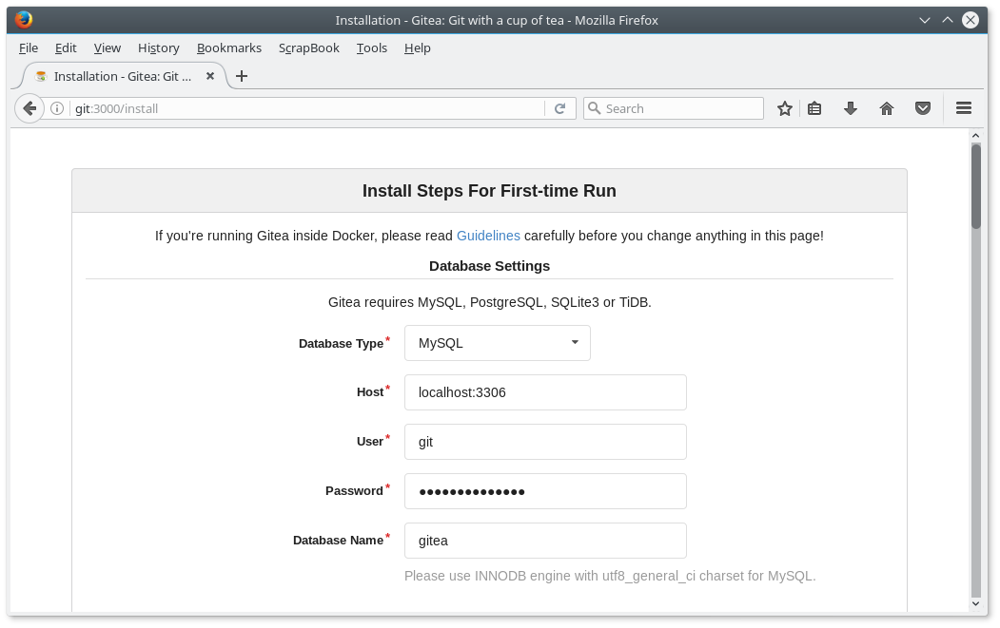
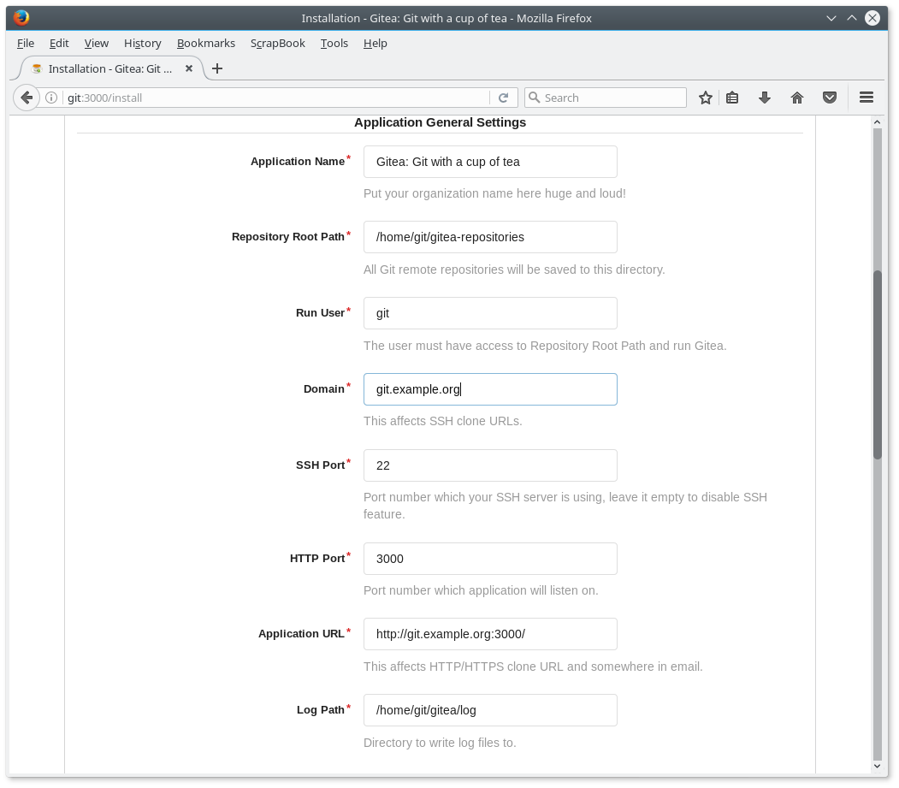
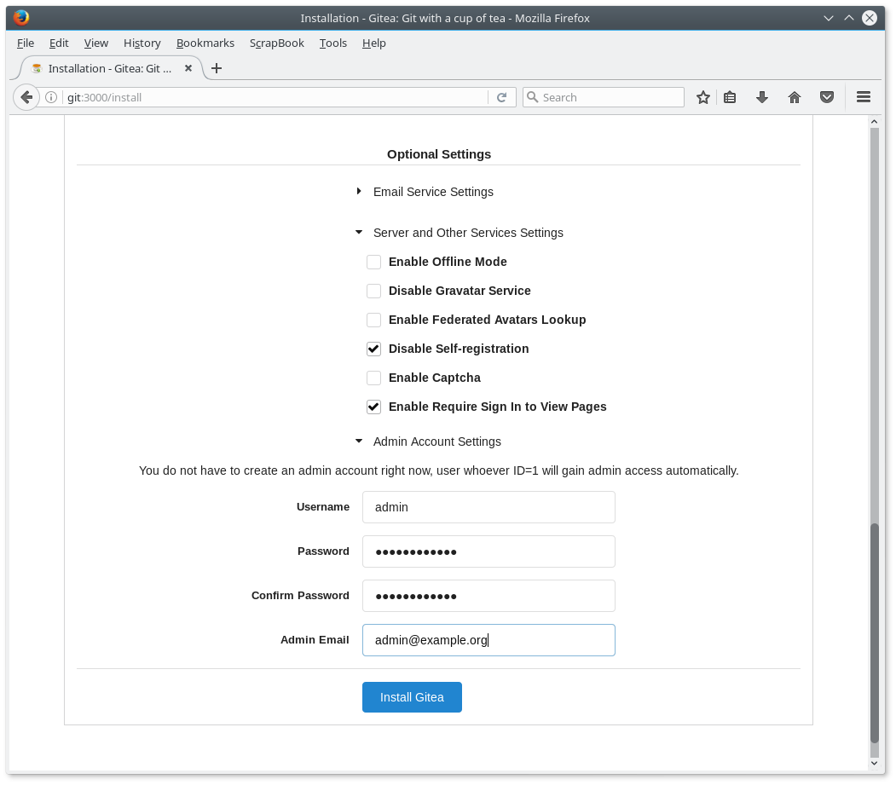
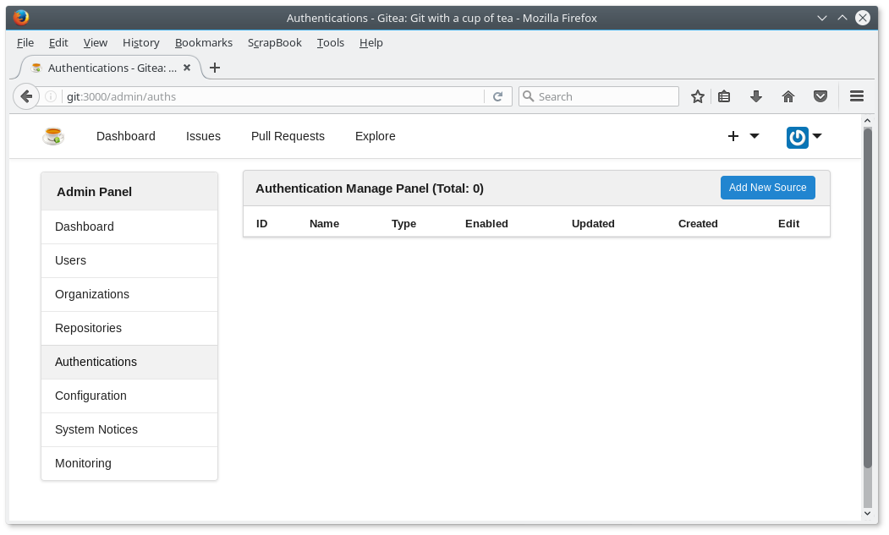
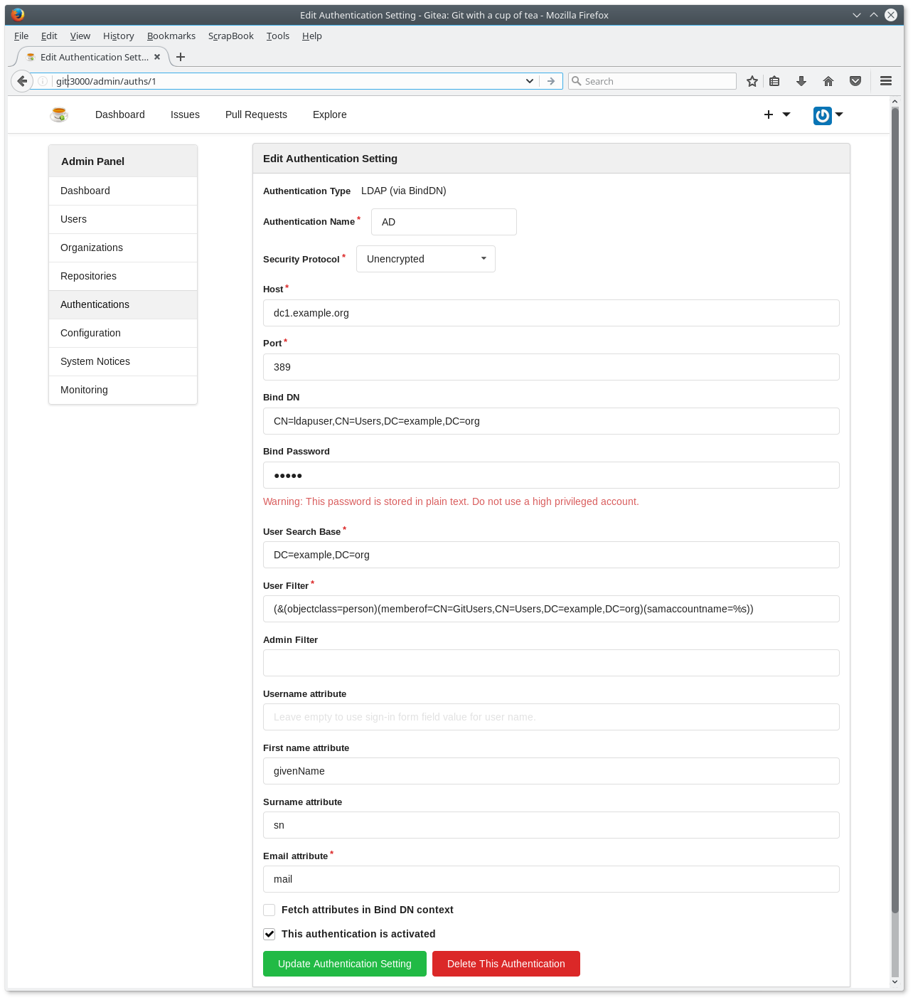

Setting up a git server
I would like my students working on projects in teams. They will need a version control system for this.1
Alternatives
I have experimented a bit with Gitlab, but it required to much effort setting up and keeping the server running stable. Rather by chance I found Gogs - Go Git Server. There is a fork called Gitea - Git with a cup of tea. I preferred Gitea, because the development of Gogs froze in the past several times. Gitea is supported by a larger team while Gogs has only two project members. Never the less the documentation of Gogs seems to be better structured and cleaner. The difference between the two project seem to be marginal at the moment.
Setting up a Ubuntu Server 16.04 LTS
It is possible to install Gitea on a Ubuntu server. I prepared the basic Ubuntu server with an OpenSSH server with the following steps. It is at your own descretion wether to run the server natively or on a virtual machine. You may even run Gogs or Gitea as a Docker container. This is also quite easy.
Setting up a virtual machine with Ubuntu Server 16.04 LTS
Most of the time I run my servers as KVM - Kernel based Virtual Machines. Creating the virtual machine is just a breeze with the following command.
/bin/bash: warning: setlocale: LC_ALL: cannot change locale (en_DK.UTF-8)virt-install --connect qemu:///system \
--name gitserver \
--ram 1024 \
--disk path=/var/lib/libvirt/images/gitserver.qcow2,size=100,format=qcow2 \
--vcpus 1 \
--network bridge=br0 \
--graphics none \
--console pty,target_type=serial \
--location 'http://archive.ubuntu.com/ubuntu/dists/xenial/main/installer-amd64/' \
--extra-args 'console=ttyS0,115200n8 serial'
You may use also Xen, VirtualBox, VMware or any other virtualisation environment.
Installing git and creating the user git
We will need git on our server for sure. This has to be installed. It would be possible running version control with the server now, but it sure lacks the comfort anyone expects in the times of Github.
sudo apt install git
The Gitea server should run as a normal user with no special privileges. The following command will create the user git for this.
sudo adduser git
Installing MariaDB and creating a database
Gitea as well as Gogs needs a database. The options are MySQL (MariaDB), PostgreSQL, SQLite3, MSSQL und TiDB. There is no recommendation to be found in the documentation of both projects. Finally, I decided to use MySQL (MariaDB) just because I have some experience with MySQL. The following command will install it on the Ubuntu server.
/bin/bash: warning: setlocale: LC_ALL: cannot change locale (en_DK.UTF-8)sudo apt install mariadb-server
The database setup just needs two SQL statements for creating the database and granting the user git full access.
/bin/bash: warning: setlocale: LC_ALL: cannot change locale (en_DK.UTF-8)CREATE DATABASE IF NOT EXISTS gitea CHARACTER SET utf8 COLLATE utf8_general_ci;
GRANT ALL ON gitea.* to 'git'@'localhost' identified by '<password>';
Writing these statement into the file create_gitea.sql allows us setting up the database with the following command.
sudo mysql -uroot < create_gitea.sql
Installing and configuring Gitea
You may start the Gitea installation and configuration after these preparations. The installation from a binary file seems the easiest to me. You only have to download the file as the user git into a suitable directory and run it:
su git
cd ~
mkdir gitea
cd gitea
wget -O gitea https://dl.gitea.io/gitea/1.0.0/gitea-1.0.0-linux-amd64
chmod +x gitea
./gitea web
Now the Gitea server is running and you may configure it.
Configuring
You configure Gitea in the web browser at the address shown at the console (e.g. http://git:3000/).

Figure 1: Configuring first part

Figure 2: Configuring second part
I do not need a mail server at the moment, so I decided not to configure it for now (see figure 3), but I do not want self registration and would like only signed in users to view the pages

Figure 3: Configring third part
Using user accounts from Active Directory
The students have already an account at school. An additional authentication method must be added to allow the students to log in with their standard credentials.

Figure 4: Adding LDAP (AD) authentication

Figure 5: Configuring LDAP (AD)
The Gitea is now completely set up. We stop the running process with CTRL-C and log out as user git.
Systemd
You have to tell Systemd to start the Gite server on system startup. This is done by creating the file /lib/systemd/system/gitea.service with the following content.
[Unit] Description=Gitea (Git with a cup of tea) After=syslog.target After=network.target After=mysqld.service #After=postgresql.service #After=memcached.service #After=redis.service [Service] # Modify these two values and uncomment them if you have # repos with lots of files and get an HTTP error 500 because # of that ### #LimitMEMLOCK=infinity #LimitNOFILE=65535 Type=simple User=git Group=git WorkingDirectory=/home/git/gitea ExecStart=/home/git/gitea/gitea web Restart=always Environment=USER=git HOME=/home/git [Install] WantedBy=multi-user.target
… and enabling and starting the service with Systemd.
/bin/bash: warning: setlocale: LC_ALL: cannot change locale (en_DK.UTF-8)sudo systemctl enable gitea.service
sudo systemctl start gitea.service
Our Gitea server is now available.
Footnotes:
The students could simply use Github repositories, but that is a no go. Every student would have to create a Github account. That is not acceptable. Furthermore, teaching and learning always needs a protected environment.